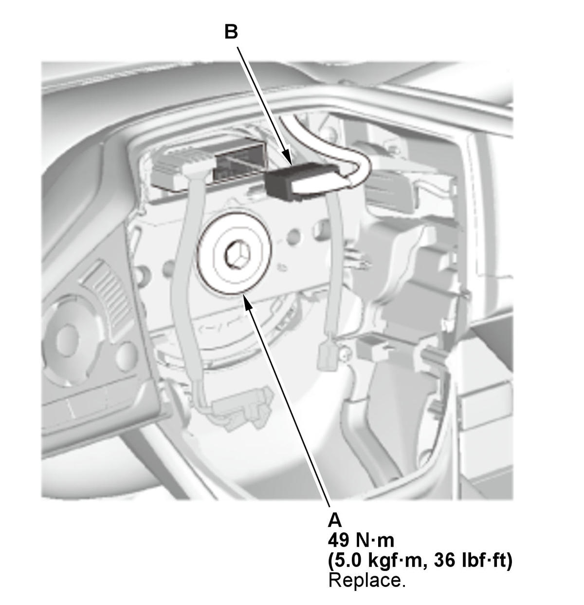

Steering Wheel Removal and Installation: Installation
SRS components are located in this area. Review the SRS component locations , and the precautions and procedures before doing repairs or service.
- Cable Reel - Align
- Steering Wheel - Install
1. Position the steering wheel hub (A) so that it engages the pin (B) of the cable reel. 2. Install the steering wheel (C) on to the steering column shaft.
NOTE: Do not tap on the steering wheel or the steering column shaft when installing the steering wheel.

Courtesy of HONDA, U.S.A., INC.3. Install the new steering wheel bolt (A), and tighten it to the specified torque. NOTE: Install the steering wheel bolt and tighten it within 5 minutes using the specified tightening torque.
4. Connect the connector (B).
5. Make sure the wire harness is routed and fastened properly.
- Driver's Airbag - Install
- 12 Volt Battery Terminal - Connect
- Steering Wheel Spoke Angle - Check
1. Check the steering wheel spoke angle. 2. If steering spoke angles to the right and left are not equal (steering wheel is not centered), correct the engagement of the wheel/column shaft splines.
- VSA Sensor Neutral Position - Memorize